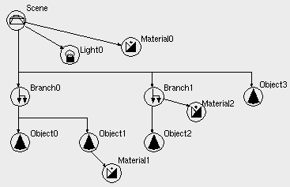

| vfr - Volflex rendering API - |
class vfrScene
Class Hierarchy
Header files
- #include "vfrScene.h"
- vfrScene(const std::string& name VFR_NONAME, const Bool mode = FALSE)
- 空のvfrSceneオブジェクトをインスタンスする。
- name オブジェクト名
- mode 自己破壊モード
- virtual ~vfrScene()
- vfrSceneオブジェクトを破壊する。
public methods / variables
- void render(unsigned int* id = NULL,
vfrMaterialStack* mstk = NULL)
- void render(const Bool tm, unsigned int* id = NULL,
vfrMaterialStack* mstk = NULL)
- シーンのレンダリングを行う
- tm 半透明モード(TRUE=半透明、FALSE=不透明)
- id レンダリング対象オブジェクトIDリスト
- mstk マテリアルスタック
- void renderBbox()
- バウンディングボックスレンダリング
(ビューフラスタムカリングインターフェース)
- void renderFeedback(unsigned int id)
- フィードバックを実行する
- id ターゲットオブジェクトID番号
- Bool addChild(vfrNode* c)
- 子供のオブジェクトを追加し、結果を返す(有効: TRUE)。
- c 追加する子供オブジェクト
- Bool remChild(vfrNode* c)
- 指定されたオブジェクトを子供のオブジェクトリストから削除する。
子供のオブジェクトリストに削除指定オブジェクトが見つかればリストから削除し、TRUEを返す。
- c 削除指定オブジェクト
- vfrNode* getChild(const int order)
- 指定されたリスト番号の子供オブジェクトへのポインタを返す。
リスト番号は、子供オブジェクトリストの登録番号であり、オブジェクトIDとは異る。
指定されたリスト番号が無効の場合、NULLを返す。
- order リスト番号
- int getNumChildren() const
- 子供のオブジェクトの数を返す。
- int getNumLights() const
- ライトの数( = VFR_LIGHT_MAX)を返す。
- vfrNode* getObj(const unsigned int id)
- オブジェクトIDで自分自身を含む配下のオブジェクトおよびライトを検索する。
- id 検索対象のオブジェクトID番号
- vfrNode* getObj(const char* name)
- オブジェクト名で、自分自身を含む配下のオブジェクトおよびライトを検索する。
- name 検索対象のオブジェクト名
- Bool accumMatrix(const unsigned int id, vfrMatrix& m) const
- 自分自身を含む配下のオブジェクトの累積幾何変換行列を計算する
- id 対象オブジェクトのオブジェクトID番号
- m 累積幾何変換行列
- vfrLight* getLight(const char* lname)
- 名前でライトのアドレスを得る。
ライト名は"light0", "light1",...と付けられる。
- lname ライトの名前
- vfrLight* getLight(const int ln)
- ライト番号でライトのアドレスを得る。
ライト番号は、0 から順に付番される。
- ln ライト番号
- void rumor(vfrBase* ref)
- インスタンスの破壊通知を受け付ける
- ref 破壊されるインスタンス
Description
vfrSceneクラスは、複数の子供のオブジェクトと
ライティングオブジェクトを持つ事ができる
グルーピングオブジェクトのクラスである。
vfrSceneオブジェクトは
シーンツリー(Fig.1)
のルートとなるオブジェクトである。

Fig.1 Scene Tree
vfrSceneオブジェクトをシーンツリーの途中に連結してはいけない。
vfrSceneオブジェクトは、シーンのワールド座標系の定義を行う。
vfrSceneオブジェクトに幾何変換が施されると、シーンツリー全てが
その影響を受ける。
vfrSceneオブジェクトは、唯一ライト(vfrLightクラスのインスタンス)を
持つ事ができるオブジェクトである。
vfrSceneオブジェクトはインスタンス時にライトをVFR_LIGHT_MAX個作成し、0から順に付番し、"light0"のような名前をつける。
初期状態では 0番目のライトだけ点灯させ、その他のライトは消灯する。
ライトの取得は、vfrSceneクラスの
getLight()メソッドを用いてのみ行う事ができる。
実際のライトの操作の手順は、以下のようになる。
vfrScene* scene = new vfrScene(); // vfrSceneのインスタンス
vfrLight* light0 = scene->getLight(0); // 0番目のライトの取得
light0->setLightType(LT_POINT); // ライトの操作
....
Bounding Box
vfrSceneオブジェクトのバウンディングボックスは、
バウンディングボックスの表示モードの
設定に関わらず表示されない。
Selection
vfrSceneオブジェクトは、セレクションテストに対し常に不合格となる。
Feedback
vfrSceneオブジェクトは、フィードバックテストに対し常に不合格となる。